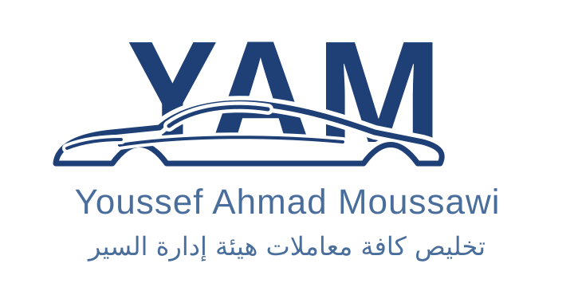

دفتر سوق — إصدار، تجديد وبدل ضائع
إصدار دفتر سوق جديد، تجديد، وبدل ضائع — ومنتابع المعاملة عنك.
اعرف أكتر
تعليم سواقة سيارات ودراجات نارية — من أول درس لحدّ ما تاخد دفتر السوق
بدّك تتعلّم سواقة؟ بـ YAM Driving School منعلّمك سواقة السيارة أو الموتوسيكل خطوة بخطوة، منحضّرك لامتحان السوق، ومنتابعلك معاملة دفتر السوق بهيئة إدارة السير.
Driving lessons in Beirut with YAM Driving School: car and motorcycle lessons for beginners, preparation for the driving test, and help with the driving licence paperwork. Our office is in Dekwaneh, next to the Traffic and Vehicle Management Authority, and we serve Beirut, Dahieh and Nabi Chit.
اتصل فينا أو راسلنا على واتساب، ومنجاوبك على كل أسئلتك. مكتبنا في الدكوانة، بيروت، بجانب هيئة إدارة السير والآليات (النافعة).
عم تدوّر على driving school Beirut، driving lessons، ta3leem swe2a؟ اتصل فينا ومنخلّصلك ياها.
بيختلف من شخص لشخص حسب خبرتك. اتصل فينا ومنحدّدلك عدد الدروس المناسب إلك. للمزيد من المعلومات اتصل على 03 450 763 أو 76 058 603، أو راسلنا على واتساب.
نعم، منعلّم سواقة السيارات والدراجات النارية (الموتوسيكلات).
تدرّب مجاناً على موقعنا: ٣٠ سؤالاً في كل اختبار مع إشارات السير، للسيارات خصوصي وعمومي وللدراجات النارية.
إصدار دفتر سوق جديد، تجديد، وبدل ضائع — ومنتابع المعاملة عنك.
اعرف أكترتسجيل سيارات وموتوسيكلات وفانات وشاحنات، ونقل ملكية.
اعرف أكترتأمين إلزامي وشامل للسيارات والموتوسيكلات وجميع الآليات.
اعرف أكتربيع وشراء أرقام سيارات مميزة، ودفع رسوم الميكانيك.
اعرف أكتر